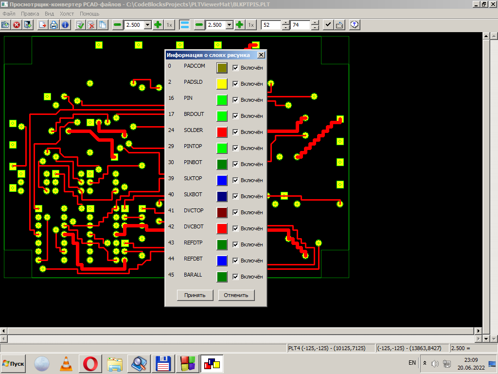

Общий вид диалога работы со слоями.

Документы PCAD имеют слоистую структуру и состоят из множества различных наложенных друг на друга слоёв, между которыми распределяются их примитивы. Точную информацию о принадлежности конкретного примитива определённому слою содержат далеко не все такие файлы, но только достаточно сложные, относящиеся к основным типам документов, создаваемых графическими редакторами комплекса PCAD. Для упрощённых файлов специального назначения, к которым, относятся, в частности, PLT-файлы, соотнесение элементов и слоёв при их открытии приходится выполнять по некоторым косвенным признакам, например, по цвету элемента. Но, тем не менее, даже в таких случаях определённая информация о слоях в файлах всё же содержится.
В ряде же других случаев даже такое соотнесение оказывается невозможным, если, например, файл не содержит вообще никакой информации о слоях рисунка и даже цвете примитивов. При таких обстоятельствах приходится генерировать однослойное представление изображения и помещать все его элементы на какой-либо единственный слой. В частности, именно так обстоят дела при обработке файлов фотокоординатографа GERBER и файлов сверловки EXCELLON.
Но в целом наш просмотрщик ориентирован именно на обработку многослойных изображений и, следовательно, предоставляет некоторые средства для работы с ними. Используя пункт меню "Вид\Слои", можно получить на экране монитора вот такой диалог, пример которого приведён на вышележащем рисунке. Он содержит полный список слоев открытого рисунка, для каждого из которых в строку располагаются его основные атрибуты:
Условный номер и имя слоя - идентификационные константы, которые не подлежат изменению. Прочие атрибуты слоя можно отредактировать. Для выбора цвета достаточно нажать на соответствующий цветной квадрат, после чего с помощью стандартного системного диалога выбора цвета (в разных ОС он может выглядеть по-разному) назначить слою нужный новый цвет.
Включение/выключение слоя также выполняется тривиально - флагу сопоставлен диалоговый элемент управления "птичка" (или "крыжик"). Для выключения слоя (исключения его из рисовки документа) нужно его снять, а для включения - наоборот, отметить.
После завершения редактирования информации о слоях следует подтвердить операция нажатием кнопки "Принять", после чего новая конфигурация слоёв будет установлена в программе. Нажатие кнопки "Отменить" откатывает все произведённые изменения, в результате чего конфигурация слоёв рисунка сохранится неизменной.